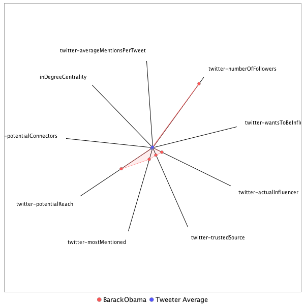

This tweeter has been identified as an influencer. Its target audience and hashtag and word usage are analyzed below.
Basic Statistics
Number of direct followers 9.09378e+07 The peak number of followers that the tweeter had during any time period. Number of retweeters 48 Number of agents that retweeted the key influencer. Number of secondary followers 2922147 The sum of the followers of those who retweeted the key influencer.
Measure Values of Other Influencers node versus Tweeter Average
This compares the measure values of the key influencer with the average values across all tweeters. For each measure line, the center-point means zero and the end-point means the maximum score across all tweeters.

Where was the influencer?
The agent is not recorded as being in any locations. Either he tweeted without geo-tags or we have no information about the tweets he sent.
The agent and retweeters were in 9 different locations.

What hashtags did the influencer use?
This displays the top ranked hashtags that the influencer and its retweeters used.
Rank hashtag Count 1 pharma 593 2 AHCA 546 3 TrumpCare 428 4 biotech 383 5 FDA 363 6 ACA 323 7 Obamacare 323 8 TheLead 273 9 Comey 249 10 NIH 231 11 MemorialDayWeekend 228 12 drugprices 176 13 BREAKING 175 14 CNNsotu 157 15 Russia 156 16 ge2017 153 17 AMR 144 18 healthcare 134 19 ParisAgreement 113 20 CDC 91 21 TrumpBudget 91 22 drugpricing 88 23 Medicaid 80 24 Opioids 80 25 Qatar 77 26 omnibus 74 27 CR 71 28 Manchester 66 29 MemorialDay 65 30 wmata 64 31 science 62 32 txlege 60 33 Trump 58 34 ThisWeek 56 35 mtal 56 36 FTN 54 37 PDUFA 51 38 climate 51 39 opioid 51 40 ComeyDay 48 41 HHS 47 42 climatechange 46 43 Ebola 45 44 ParisAccord 43 45 GrenfellTower 42 46 ComeyHearing 40 47 biosimilars 39 48 ComeyFiring 37 49 ComeyTestimony 37 50 MTP 35 51 SCOTUS 34 52 Israel 33 53 NotTheComeyHearing 32 54 ODAC 32 55 JFK100 31 56 biosimilar 31 57 scandal 31 58 LondonBridge 30 59 CBO 28 60 US 28 61 kentuckyderby 28 62 FDARA 27 63 Zika 27 64 tomorrowspaperstoday 27 65 yemen 27 66 NATO 26 67 Saudi 26 68 TonyAwards2017 26 69 FBI 25 70 Syria 25 71 cancer 25 72 shutdown 25 73 SessionsHearing 24 74 vaccines 24 75 OpioidCrisis 23 76 ASCO17 22 77 ksleg 22 78 potusabroad 22 79 AmericaSpeaksOut 21 80 abq 21 81 onthisday 21 82 snl 21 83 LSSC 20 84 TheBachelorette 20 85 bbcpapers 20 86 CongressionalBaseballGame 19 87 KYderby 19 88 NM 19 89 WonderWoman 19 90 bbcelection 19 91 Genius 18 92 Iran 18 93 WHO 18 94 livepositions 18 95 BoroughMarket 17 96 GDUFA 17 97 OTD 17 98 Putin 17 99 covfefe 17 100 generics 17
Tweet List
This displays all of the tweets of the influencer ordered from earliest to latest. Click on a tweet to see its status in Twitter.
Number Tweet ID Date Message 1 859457313232605184 2017-05-02 13:19:26-04 Well said, Jimmy. That's exactly why we fought so hard for the ACA, and why we need to protect it for kids like Billy. And congratulations! https://t.co/77F8rZrD3P 2 863756100948156416 2017-05-14 10:01:16-04 Happy Mother's Day to my love and partner on this journey @MichelleObama, and to all the wonderful, hardworking mothers out there. 3 867061620027076608 2017-05-23 12:56:14-04 Our hearts go out to those killed and wounded in Manchester. Americans will always stand shoulder to shoulder with the people of the UK. 4 869178832082874369 2017-05-29 09:09:16-04 Forever grateful for the service and sacrifice of all who fought to protect our freedoms and defend this country we love. https://t.co/y7IQltbEz9 5 868455601663332353 2017-05-27 09:15:25-04 Good to see my friend Prince Harry in London to discuss the work of our foundations & offer condolences to victims of the Manchester attack. https://t.co/7azv4BV2Nt 6 870695481290117120 2017-06-02 13:35:54-04 On this National Gun Violence Awareness Day, let your voice be heard and show your commitment to reducing gun violence. https://t.co/eXkV4WmkqA 7 867745464329883648 2017-05-25 10:13:35-04 Through faith, love, and resolve the character of the people of Manchester has shown itself. Our thoughts & prayers are with you. https://t.co/rZyZaQVWT2 8 876456804305252353 2017-06-18 11:09:20-04 Of all that I've done in my life, I'm most proud to be Sasha and Malia's dad. To all those lucky enough to be a dad, Happy Father's Day! https://t.co/ya1YAJignC